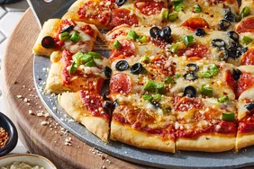

Pizza Recipe

Perfect Homemade Pizza
Indulge in the classic flavors of Italy with our Perfect Homemade Pizza recipe.
This delightful dish features a crispy thin crust topped with rich tomato sauce, fresh mozzarella cheese, and fragrant basil leaves.
Simple yet delicious, this pizza is perfect for any occasion, bringing a taste of authentic Italian cuisine right to your kitchen.
Ingredients
- 2 1/4 teaspoons active dry yeast
- 1 1/2 cups warm water (110°F/45°C)
- 3 1/2 cups all-purpose flour
- 2 tablespoons olive oil
- 1 teaspoon sugar
- 1 teaspoon salt
- 1 cup pizza sauce
- 2 cups shredded mozzarella cheese
- Fresh basil leaves
- Olive oil for brushing
- Optional toppings: sliced pepperoni, mushrooms, bell peppers, onions, olives
Steps
- In a small bowl, dissolve the active dry yeast and sugar in warm water. Let it sit for about 10 minutes until it becomes frothy.
- In a large bowl, combine the flour and salt. Make a well in the center and add the yeast mixture and olive oil. Mix until the dough starts to come together.
- Turn the dough onto a lightly floured surface and knead for about 8-10 minutes, or until it becomes smooth and elastic.
- Place the dough in a lightly oiled bowl, cover it with a damp cloth, and let it rise in a warm place for about 1-2 hours, or until it has doubled in size.
- Preheat your oven to 475°F (245°C). If you have a pizza stone, place it in the oven while it preheats.
- Punch down the dough and divide it into two equal portions. Roll out each portion on a lightly floured surface to your desired thickness.
- Transfer the rolled-out dough to a pizza peel or an inverted baking sheet lined with parchment paper.
- Spread a thin layer of pizza sauce over the dough, leaving a small border around the edges.
- Sprinkle shredded mozzarella cheese evenly over the sauce.
- Add your desired toppings, such as sliced pepperoni, mushrooms, bell peppers, onions, or olives.
- Brush the edges of the crust with olive oil to help it brown nicely.
- Carefully transfer the pizza to the preheated oven (or onto the hot pizza stone) and bake for 10-12 minutes, or until the crust is golden and the cheese is bubbly and slightly browned.
- Remove the pizza from the oven and sprinkle fresh basil leaves on top.
- Allow the pizza to cool for a few minutes before slicing and serving.